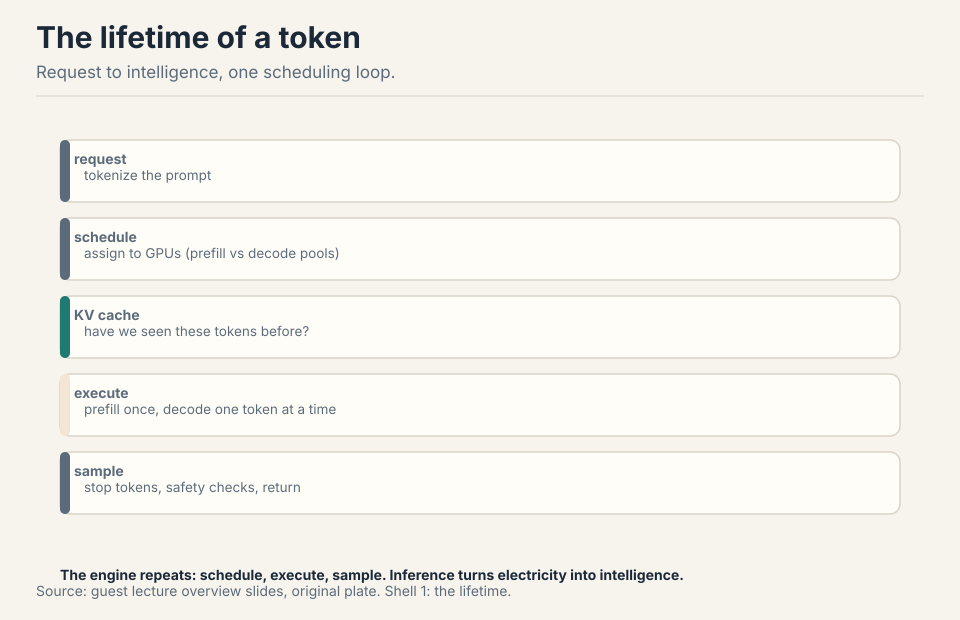
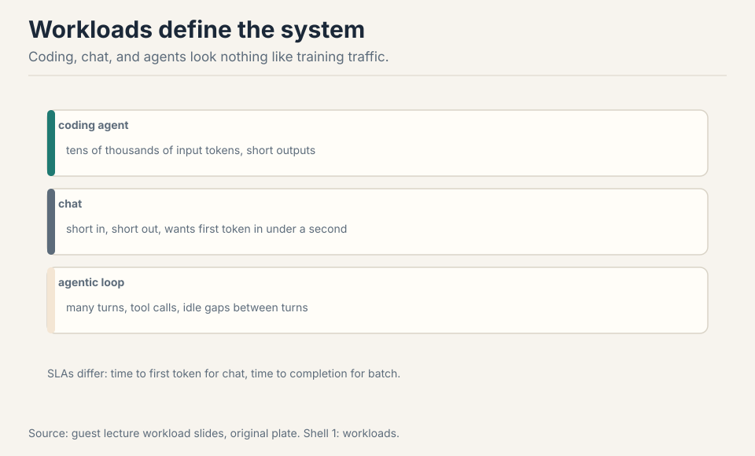
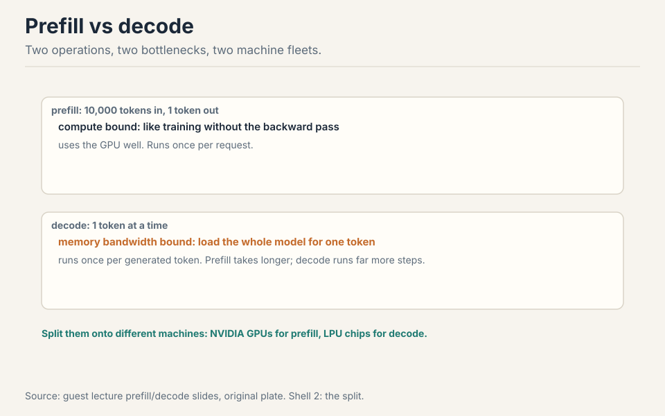
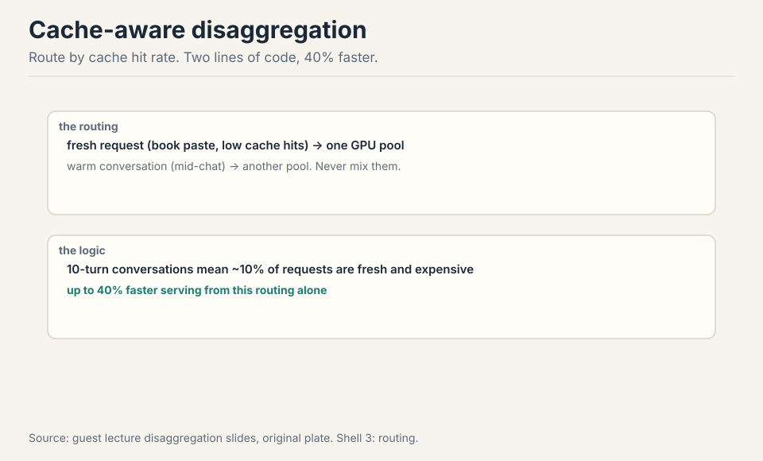
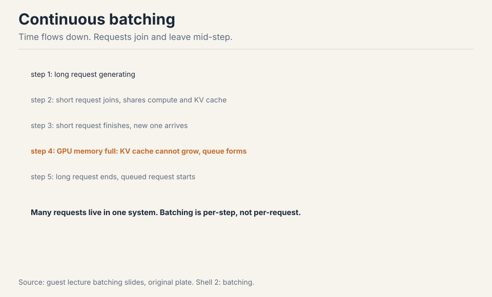
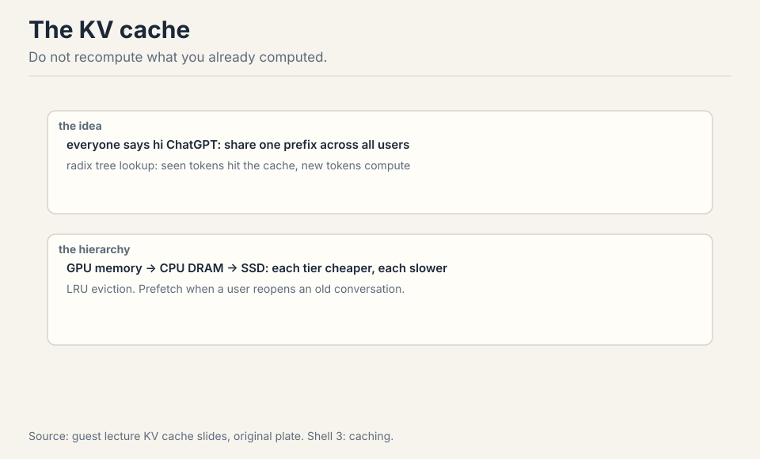
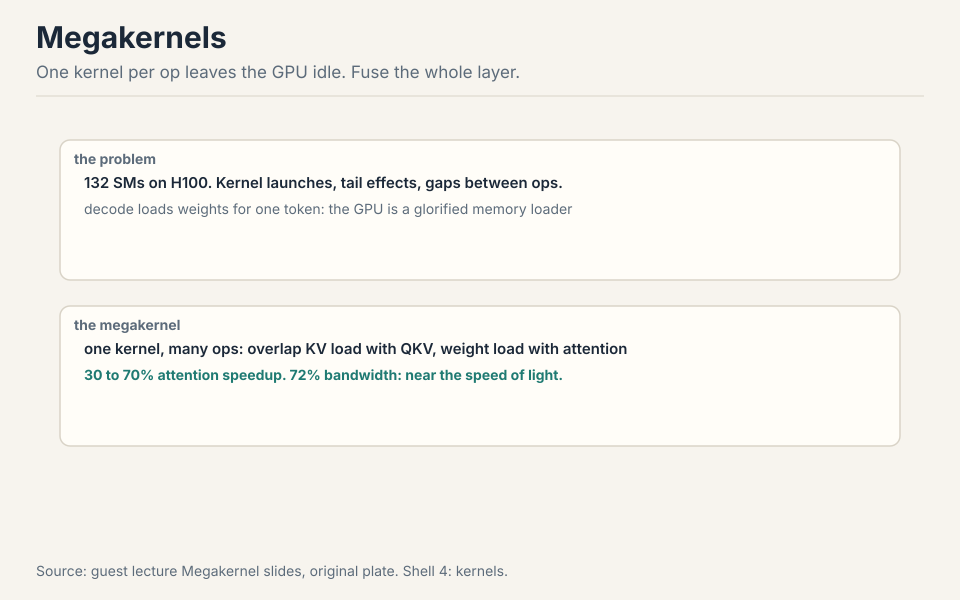
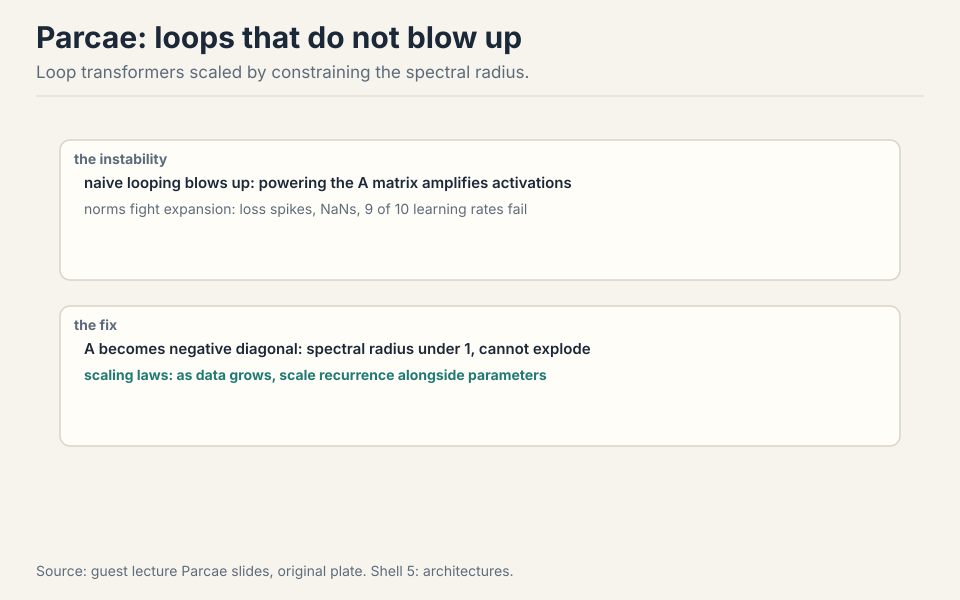

Lecture 18: Serving Inference
Video blocked (ad-blocker or local file mode).
Watch on YouTubeVideo not loading? Watch on YouTube
Guest lecture by Dan Fu (UCSD / Together AI): serving models and the research behind it.
The problem: the other side of the model
A guest lecture flips the course: from training models to serving them. Inference is the engine that turns electricity into intelligence, the way a car engine turns oil into motion 05:09 ⏱05:09. The whole inference stack in one loop: schedule the request to GPUs, check the KV cache for seen tokens, execute the model, sample a token, repeat 07:34 ⏱07:34.

Know the kernels and you enable full-stack innovation: new routing, new kernels, new architectures. This lecture is that stack, from the token’s lifetime to research that changes what the model is.
First attempt: one stack for everything
Production traffic does not look like training traffic. Coding agents send tens of thousands of input tokens and get short outputs 10:24 ⏱10:24. Chat wants the first token in under a second. Agentic loops have many turns, tool calls, and idle gaps between turns 11:21 ⏱11:21. Batch jobs translate each document once.

The naive stack serves all of them the same way: static batches, one fleet, first-in-first-out. The workload shape, and its SLA, decides every systems choice. One stack cannot be optimal for all of them.
Because the workloads stress different bottlenecks. A coding agent needs huge KV caches kept hot across turns (memory capacity). A chat app needs low time-to-first-token (prefill latency). Batch translation needs throughput on first-token processing with almost no decode pressure. A stack tuned for one wastes the other’s dominant resource. This is why the lecture ends on co-design: architectures like DeepSeek’s MLA radically compress the KV cache precisely because agentic workflows are KV-cache bound, while BERT-era batch jobs could use cheap bidirectional encoders (the guest’s example) since they barely decode at all. Interactive chat: time to first token (under a second keeps the user). Agents: KV cache capacity per session (hot cache across turns). Batch: tokens per second per dollar (throughput). The lecturer’s rule: nobody ever asks to serve less traffic, subject to those SLAs.
Where one stack breaks: prefill vs decode
Two operations, two bottlenecks. Prefill: 10,000 never-seen tokens in, compute the activations and one logit out. Compute bound, like training without the backward pass 14:24 ⏱14:24. Decode: generate one token at a time, reloading the whole model for each one. Memory bandwidth bound, light on flops 14:54 ⏱14:54.

Work the decode waste. A 70B model in bf16: 140 GB of weights. One decode step loads all 140 GB to produce one token: 140 GB of memory traffic per token. At 3.3 TB/s, that is 42 ms per token before any compute. The GPU is a glorified memory loader 34:27 ⏱34:27.
Prefill takes longer per request. Decode runs far more steps (once per generated token). One fleet cannot specialize for both: the prefill fleet wants tensor-core-rich GPUs, the decode fleet wants bandwidth-rich chips. Hardware follows the split: NVIDIA plans GPUs for prefill and Groq-style LPU chips for decode. OpenAI partners with Cerebras for the same reason 21:07 ⏱21:07.
The key question
Two bottlenecks, one fleet. What if prefill and decode ran on different fleets, each specialized? That is disaggregation. And inside decode, what if the gaps between kernels died? That is the Megakernel. Two questions, two answers.
Disaggregation: split the fleets
The standard move: disaggregate, run prefill on one fleet, decode on another, specialize each stack 20:00 ⏱20:00.

Cache-aware disaggregation: two lines of routing code, 40% faster serving. Most requests are mid-conversation (warm). About 10% are fresh (someone pasted a book). Never run the book-paste on the same GPUs as the short chat: route low cache-hit-rate requests to one prefill pool, warm requests to another 31:31 ⏱31:31. Work the win: the book-paste hogs the prefill GPUs for seconds while 90 chat requests queue behind it. Separated, the chat pool’s tail latency collapses.
Scale bugs are the tax: 0.001%-probability kernel errors that NaN logits into “hi hi hi” loops, off-by-one reads that emit random Chinese characters, tool-call handlers that loop for tens of thousands of tokens 21:54 ⏱21:54. Early days: in ten years this will look obvious.
Continuous batching: fill the gaps
Static batches wait for the slowest request. Continuous batching: requests join and leave mid-step. Decode one token per sequence per step, evict finished sequences, admit new ones. KV memory is the hard limit: queue when full.

Work the win. Four requests, lengths 10, 50, 100, 200. Static batch: all four wait 200 steps. Continuous: the 10-token request leaves at step 10, a new one joins at step 11. GPU utilization stays high instead of trailing off with the stragglers.
The KV cache: never recompute
Users repeat themselves. Every “hi ChatGPT” shares a prefix. Every conversation turn repeats the book you pasted. Prefix sharing with a radix tree: look up which tokens you have seen, compute only the new ones 18:02 ⏱18:02.

When the GPU fills, offload: GPU to CPU DRAM to SSD, each tier cheaper and slower 25:43 ⏱25:43. Evict with LRU, prefetch when a user reopens an old conversation. Classic OS paging, rediscovered for activations 27:51 ⏱27:51.
Megakernels: kill the gaps
One kernel per op leaves streaming multiprocessors idle: launch gaps, tail effects, gaps between kernels add up. The Megakernel fuses many ops into one kernel and schedules them like a distributed system: start the KV load before QKV-plus-RoPE finishes, load the O-projection weights before attention ends 37:32 ⏱37:32.

Built with ThunderKittens, a lower-level Triton-like kernel library. Payoff: 30 to 70% on attention inference, one full Llama-1B layer in a single kernel, 72% of peak memory bandwidth on H100 40:56 ⏱40:56. The cost: one kernel engineer writes Megakernels for one hardware, two or three models, batch sizes 1 to 16, per year. Batch 17 means starting over 63:37 ⏱63:37. The most extreme version of the lecture-5 lesson: the fastest code is hand-fitted to the exact shape.
Parcae: flops without parameters
A different scaling question: is more parameters the only way? Parcae loops transformer blocks, reusing parameters for more flops. Naive looping blows up (the A matrix powers amplify activations). The fix from state-space theory: make A a negative diagonal matrix so the spectral radius stays under 1, and the system cannot explode 50:50 ⏱50:50.

Work the constraint. Loop a block 4 times with A = 1.2 on the diagonal: activations grow by 1.2^4 = 2.07x per pass, compounding to NaN. With A = -0.9 diagonal: magnitudes shrink by 0.9 per pass, bounded forever, while the signs alternate and the network still computes. The result: stable training where unconstrained loops NaN, and better perplexity than the same-parameter transformer baseline 53:31 ⏱53:31.
The scaling law finding: as data grows, scale recurrence alongside parameters. Today’s models have zero recurrence and tons of data, sitting at the far left of the curve, which suggests pre-training may be under-looping 58:15 ⏱58:15. Inference bonus: fewer parameters means more KV cache and less cross-GPU communication 62:03 ⏱62:03.
Co-design: one decision
Inference closes the loop back to architecture. Size your model to the chip’s memory (a Groq LPU holds ~250MB). Match quantization to the hardware (NVFP4 on NVIDIA, MXFP4 on AMD) 64:47 ⏱64:47. Compress the KV cache if you serve agents (MLA). Skip the decoder if you serve batch (BERT on search). The model’s shape and the fleet’s shape are one decision.
| Serving target | Model choice |
|---|---|
| Groq LPU (~250MB) | size the model to fit with KV cache room |
| NVIDIA GPUs | train in NVFP4 |
| AMD | use MXFP4 |
| agentic workloads | compress the KV cache (MLA) |
| batch workloads | skip the decoder (BERT-style) |
Mapping back: what each idea fixes
| Pain | Fix | How |
|---|---|---|
| One stack wastes someone’s bottleneck | Workload-aware design | Coding: cache capacity. Chat: TTFT. Batch: tok/s/$. |
| Prefill and decode fight | Disaggregation | Two fleets, each specialized. Hardware follows. |
| Book-paste blocks chat | Cache-aware routing | Route by hit rate. Two lines, 40% faster. |
| Static batches trail stragglers | Continuous batching | Join and leave mid-step. KV memory is the limit. |
| Users repeat themselves | Radix prefix sharing | Compute only new tokens. Tiered offload, LRU. |
| Kernel gaps idle SMs | Megakernels | Fuse the layer, overlap loads. 72% of peak BW. |
| Parameters are the only dial | Parcae loops | Spectral radius under 1. Scale recurrence with data. |
The honest price
The lecturer’s slides were AI generated. He warned that fine details may be wrong, and this lesson follows his spoken claims, not the slide pixels. Scale figures (trillion-parameter open models, 5 to 10 trillion frontier) are his 2026 estimates, not measurements. The Parcae Twitter story was a fabrication the poster retracted. The Megakernel’s price is human: one engineer, one hardware, a few models a year. And the deepest price: serving optimizes a fixed model. The co-design table is the real lesson. The fleet and the model are one decision, made together or paid for separately.
Recap: the whole lesson on one screen
The story in eight steps. Each step answers the one before it.
- The other side of the model. Inference turns electricity into intelligence. The loop: schedule, KV lookup, execute, sample, repeat.
- Workloads differ. Coding: long in. Chat: fast first token. Agents: turns and tools. Batch: throughput. Shape decides system.
- Prefill vs decode. Prefill: compute-bound, once. Decode: memory-bound, one full model load per token. Split the fleets.
- Route by cache hit rate. Fresh and warm never share GPUs. Two lines of routing, 40% faster serving.
- Batch continuously. Requests join and leave mid-step. KV memory is the hard limit. Queue when full.
- Never recompute. Radix-tree prefix sharing. GPU, CPU, SSD tiers. LRU eviction, prefetch. OS paging for activations.
- Megakernels kill gaps. Fuse the layer, overlap everything. 30-70% faster, 72% of peak bandwidth. One engineer per hardware per year.
- Parcae loops safely. Spectral radius under 1. Flops without parameters. Scale recurrence with data. Co-design: model and fleet are one decision.
Official sources and further reading
Official: - Lecture 18 video (guest lecture, Dan Fu, UCSD / Together AI). - Papers named in lecture: Megakernels/ThunderKittens (Stanford and Together), Parcae (UCSD).
Further reading: - DeepSeek V3/V4 inference papers (fused MoE kernels, MLA). - vLLM and TensorRT-LLM docs (continuous batching, disaggregation).
Caveats from these sources. The lecturer’s slides were AI generated. He warned that fine details may be wrong, and this lesson follows his spoken claims, not the slide pixels. Scale figures (trillion-parameter open models, 5 to 10 trillion frontier) are his 2026 estimates, not measurements. The Parcae Twitter story was a fabrication the poster retracted.
Connections to the other courses
- CS336 L04: flash attention and kernel writing meet Megakernels.
- CS336 L09: scaling laws extended to recurrence.
- CS336 L16: RL rollouts are decode-heavy inference workloads.
Sources
- VIDEOLecture 18 video, Stanford Online YouTube
- NOTESOfficial subtitle transcript (en-US)